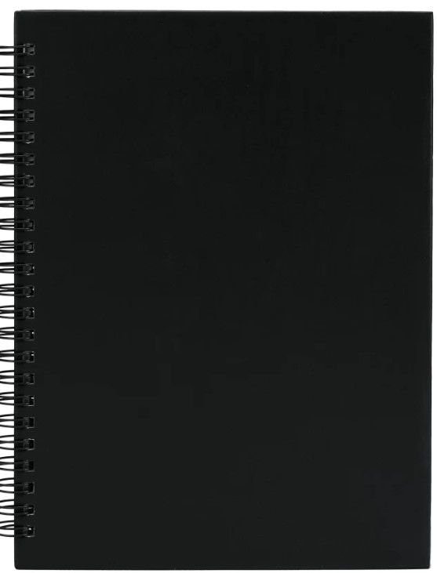

Un carnet
d’exploration.
Un espace de recherches visuelles où se rencontrent essais, images, matières et expérimentations. Ce carnet rassemble une démarche de création autant que ses différentes étapes.

Explorer avant de choisir
Le carnet permet de conserver des pistes, de tester des associations et de faire évoluer une idée. Il ne présente pas uniquement un résultat final : il donne aussi à voir les essais, les hésitations et les directions explorées pendant la création.
Une démarche par essais
Les pages réunissent différentes expérimentations autour de l’image et de la composition. Les choix de cadrage, de formes, de couleurs et de matières participent à construire progressivement un univers visuel.
Ce que cette pratique m’apporte
Cette démarche m’encourage à observer, à essayer plusieurs possibilités et à garder une trace de mes recherches. Elle nourrit ma sensibilité graphique et m’aide à développer un regard plus personnel sur les images.